TVCache · compatibility-2026-11-07
Input: /mnt/s/Projects/tvcache-rust/results/compatibility-2026-11-07
Paper panels provide context across unmatched workloads. Replay estimates are not measured training speedups.
rust-snapshots-off/capacity/hit_rate
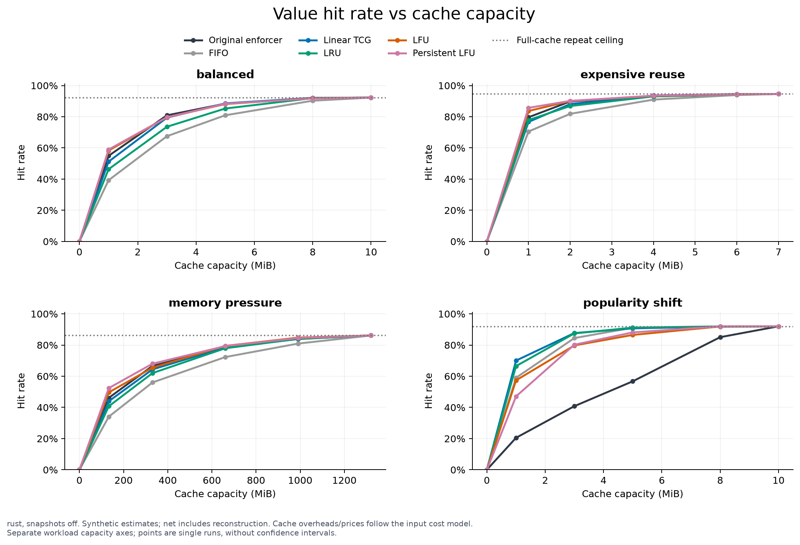
rust, snapshots off. Synthetic estimates; net includes reconstruction. Cache overheads/prices follow the input cost model.
Separate workload capacity axes; points are single runs, without confidence intervals.
PDF · Plot data · Provenance
rust-snapshots-off/capacity/time_saved
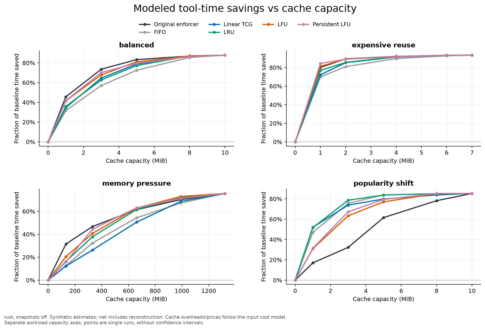
rust, snapshots off. Synthetic estimates; net includes reconstruction. Cache overheads/prices follow the input cost model.
Separate workload capacity axes; points are single runs, without confidence intervals.
PDF · Plot data · Provenance
rust-snapshots-off/capacity/cost_saved
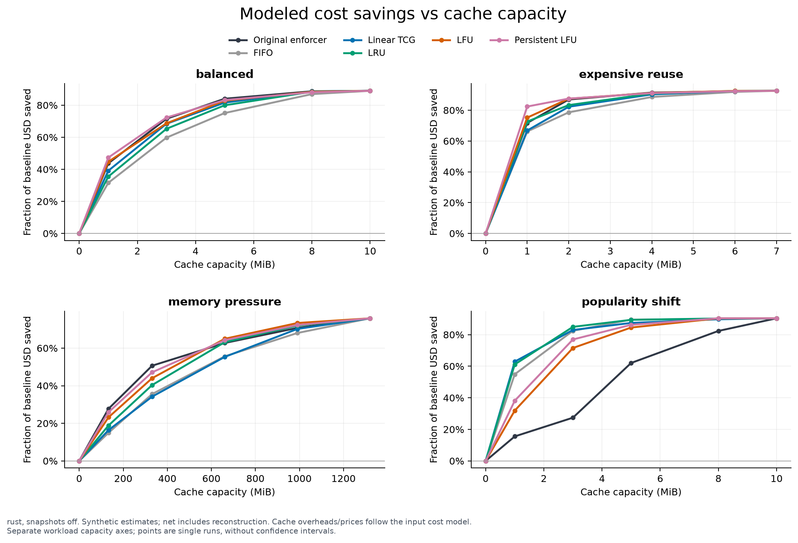
rust, snapshots off. Synthetic estimates; net includes reconstruction. Cache overheads/prices follow the input cost model.
Separate workload capacity axes; points are single runs, without confidence intervals.
PDF · Plot data · Provenance
rust-snapshots-off/tradeoffs/vs_original
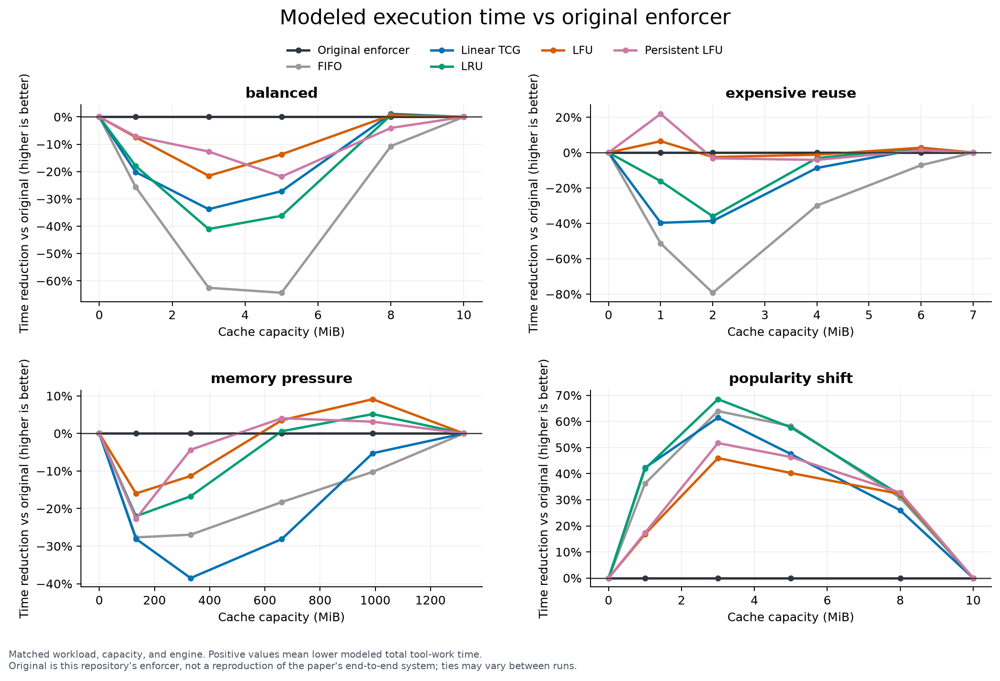
Matched workload, capacity, and engine. Positive values mean lower modeled total tool-work time.
Original is this repository's enforcer, not a reproduction of the paper's end-to-end system; ties may vary between runs.
PDF · Plot data · Provenance
rust-snapshots-off/tradeoffs/policy_overhead
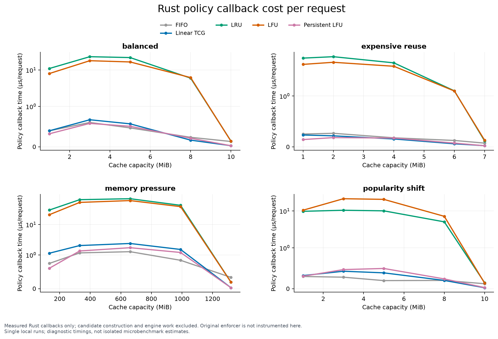
Measured Rust callbacks only; candidate construction and engine work excluded. Original enforcer is not instrumented here.
Single local runs; diagnostic timings, not isolated microbenchmark estimates.
PDF · Plot data · Provenance
rust-snapshots-off/reconstruction/gross_vs_net
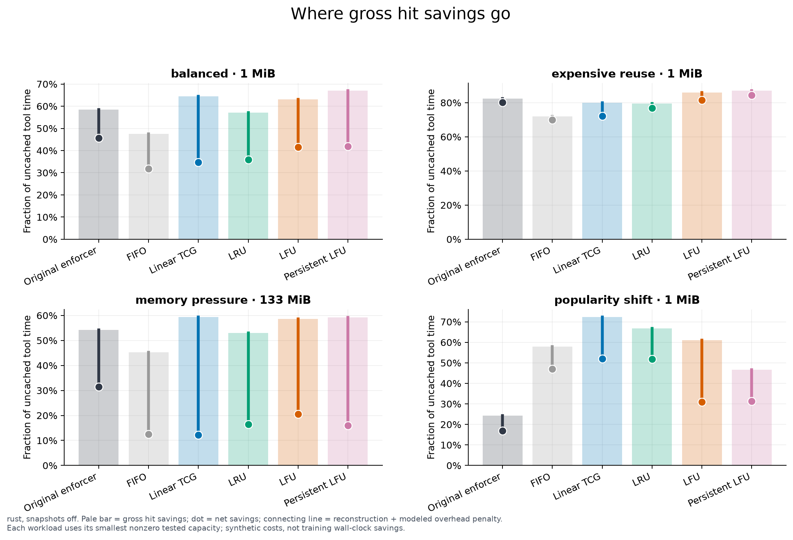
rust, snapshots off. Pale bar = gross hit savings; dot = net savings; connecting line = reconstruction + modeled overhead penalty.
Each workload uses its smallest nonzero tested capacity; synthetic costs, not training wall-clock savings.
PDF · Plot data · Provenance
rust-snapshots-off/snapshots/net_benefit
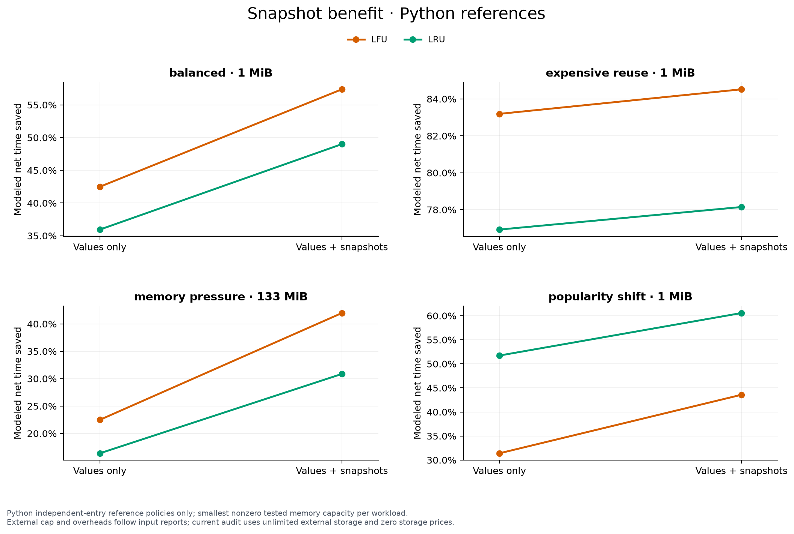
Python independent-entry reference policies only; smallest nonzero tested memory capacity per workload.
External cap and overheads follow input reports; current audit uses unlimited external storage and zero storage prices.
PDF · Plot data · Provenance
rust-snapshots-off/snapshots/external_storage
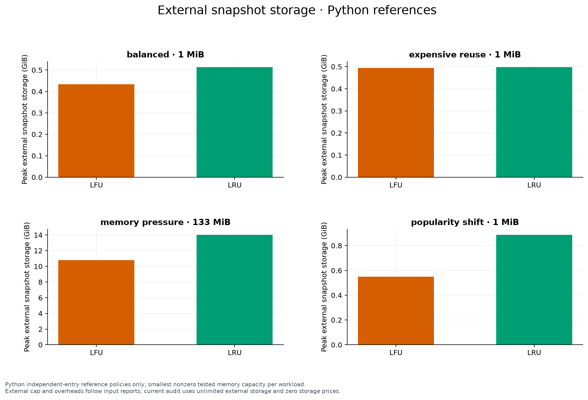
Python independent-entry reference policies only; smallest nonzero tested memory capacity per workload.
External cap and overheads follow input reports; current audit uses unlimited external storage and zero storage prices.
PDF · Plot data · Provenance
rust-snapshots-off/scaling/local_load
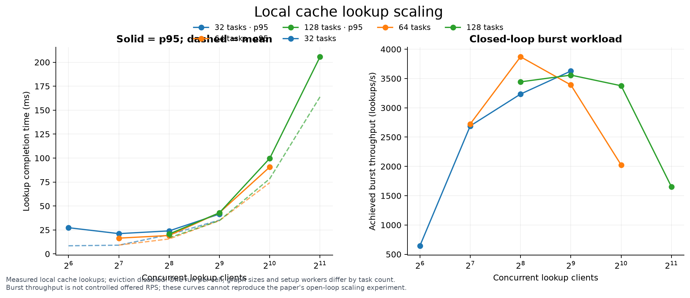
Measured local cache lookups; eviction disabled. One run per cell; graph sizes and setup workers differ by task count.
Burst throughput is not controlled offered RPS; these curves cannot reproduce the paper's open-loop scaling experiment.
PDF · Plot data · Provenance
rust-snapshots-off/paper/hit_rate_context
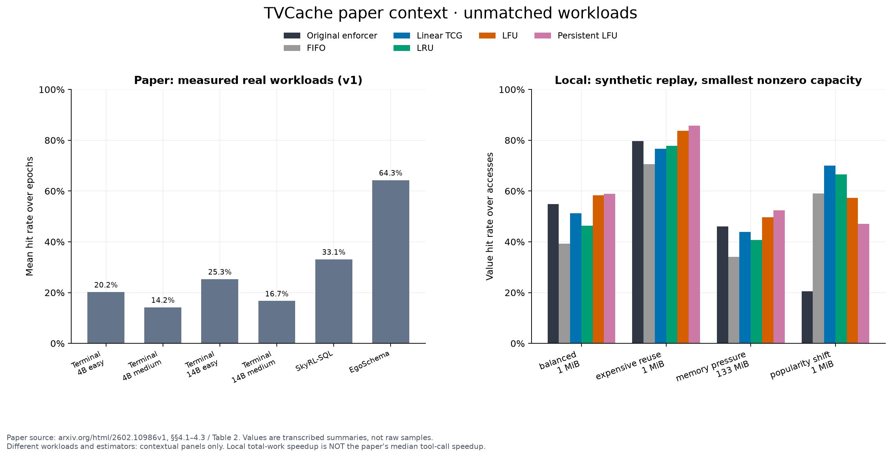
Paper source: arxiv.org/html/2602.10986v1, §§4.1–4.3 / Table 2. Values are transcribed summaries, not raw samples.
Different workloads and estimators: contextual panels only. Local total-work speedup is NOT the paper's median tool-call speedup.
PDF · Plot data · Provenance
rust-snapshots-off/paper/speedup_context
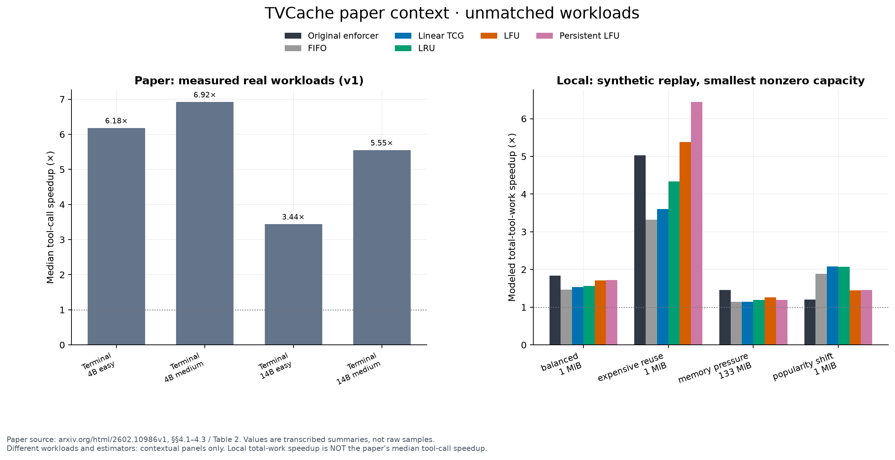
Paper source: arxiv.org/html/2602.10986v1, §§4.1–4.3 / Table 2. Values are transcribed summaries, not raw samples.
Different workloads and estimators: contextual panels only. Local total-work speedup is NOT the paper's median tool-call speedup.
PDF · Plot data · Provenance